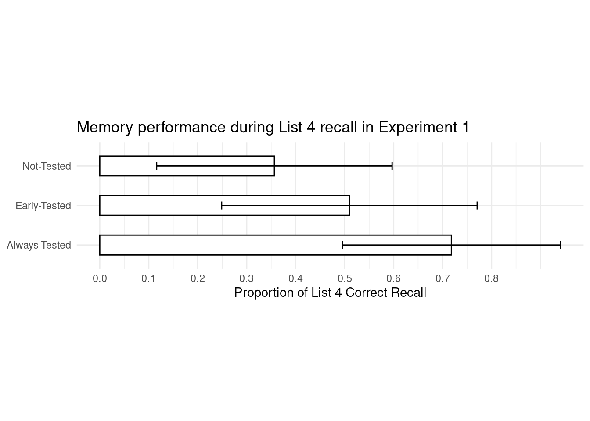
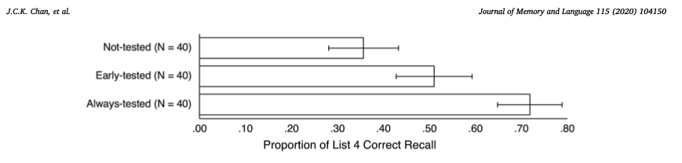

Library
library(tidyverse)
library(here)
library(ggplot2)
library(fs)Write an Rmarkdown report on your findings, including the table above and some information about the article such as general aim, short methods and results. If data is available, try including some
This exercise is about identifying reproducibility issues in a scientific publication. The reproducibility is scored by the metrics used here.
Publications do not always contain a ‘data availability statement’, and those that do do not always contain any data. Statements range from ‘not publicly available’, ‘available on reasonable request’, ‘publicly available’ or ‘publicly available, except not here and there is no link or text supplying said data’.
We looked at this paper in this exercise:
Jason C.K. Chan, Krista D. Manley, Dahwi Ahn, Does retrieval potentiate new learning when retrieval stops but new learning continues?, Journal of Memory and Language, Volume 115, 2020, 104150, ISSN 0749-596X https://doi.org/10.1016/j.jml.2020.104150
The general aim of the experiment described in the article has to do with a concept called “the forward testing effect”. This is a mechanic that enhances a learner’s ability to learn new materials, which is a result of “interpolated retrieval opportunities” such as brief quizzes between learning sessions. The article examines the persistence of the forward testing effect when the students stop receiving these interpolated retrieval opportunities.
This was tested through four different experiments. The general experimental setup was to have undergrad students from Iowa State University participate instructed to study a list of words with the goal of having a test at the end. The students were given learning instructions and were informed that they might randomly be given interpolated tests by the computer. The experiments differed in at which moments the interpolated tests occurred and the experimental results were measured by the student’s final performance.
The study suggests that consistently performing these retrieval opportunities provides a benefit to retaining the information as observed by the improved results. When the interpolated testing is stopped however, its advantages are diminished substantially.
Using the metrics from the aforementioned initial publication we score this paper as follows:
| Transparency Criteria | Definition | Response |
|---|---|---|
| Study Purpose | A concise statement in the introduction of the article, often in the last paragraph, that establishes the reason the research was conducted. Also called the study objective. | Yes |
| Data Availability Statement | A statement, in an individual section offset from the main body of text, that explains how or if one can access a study’s data. The title of the section may vary, but it must explicitly mention data; it is therefore distinct from a supplementary materials section. | No, supplementary only |
| Data Location | Where the article’s data can be accessed, either raw or processed. | No |
| Study Location | Author has stated in the methods section where the study took place or the data’s country/region of origin. | No, participant’s origin only |
| Author Review | The professionalism of the contact information that the author has provided in the manuscript. | Yes, email |
| Ethics Statement | A statement within the manuscript indicating any ethical concerns, including the presence of sensitive data. | No |
| Funding Statement | A statement within the manuscript indicating whether or not the authors received funding for their research. | No |
| Code Availability | Authors have shared access to the most updated code that they used in their study, including code used for analysis. | No |
While the paper states that it has supplementary data available with a doi linking to the paper: https://doi.org/10.1016/j.jml.2020.104150 It does not contain an actual data availability statement as mentioned before, however upon further inspection the results under experiment 1 does contain a broken link https://doi.org//10.17605/OSF.IO/ G2Y93 due to a space and a working url https://osf.io/g2y93 to the OSF version which contains the data used in the paper.
/home/alexgroot/dsfb2_quarto/data_raw/data_0050/osfstorage-archive/
├── TMNT Combined Data OSF.csv
├── TMNT Meta-analysis OSF.csv
├── TPL-TMNT E1 Data OSF.csv
├── TPL-TMNT E2 Data OSF.csv
├── TPL-TMNT E3 Data OSF.csv
├── TPL-TMNT E4 Data OSF.csv
└── readme.txtFiles are clearly named and a readme.txt containing metadata file is included.
Condition Subject Session L1_RclP L2_RclP L3_RclP L4_RclP Int1_4 Int2_4
1 Always-Tested 300 1 1.00 1.00 1.00 0.93 0 0
2 Always-Tested 301 2 1.00 1.00 0.93 1.00 0 0
3 Always-Tested 302 3 0.87 0.87 0.93 0.73 0 0
4 Always-Tested 303 4 0.73 0.67 0.87 0.73 0 0
5 Always-Tested 304 1 0.93 0.47 0.80 1.00 0 0
6 Always-Tested 305 2 0.60 0.73 0.73 0.87 0 0
Int3_4 Int_L4 L1_ARC L2_ARC L3_ARC L4_ARC
1 0 0 1.00 1.00 0.86 1.00
2 0 0 0.30 0.50 0.84 1.00
3 0 0 0.05 0.37 1.00 1.00
4 0 0 0.74 0.45 0.84 0.78
5 0 0 0.58 0.61 1.00 0.88
6 0 0 -0.04 0.34 0.47 1.00The data provided is in tidy format, which makes for easy data manipulation and analysis. The data does not contain any R code, however the analysis in the original paper was performed in Jeffreys’s Amazing Statistics Program (JASP), which is a program written in C++ and QML, but the analyses themselves are written in R using packages from CRAN.
Condition Subject Session L1_RclP
Length:120 Min. :101.0 Min. :1.00 Min. :0.0000
Class :character 1st Qu.:139.5 1st Qu.:1.75 1st Qu.:0.5300
Mode :character Median :233.5 Median :2.50 Median :0.7300
Mean :227.5 Mean :2.50 Mean :0.6784
3rd Qu.:311.2 3rd Qu.:3.25 3rd Qu.:0.8700
Max. :353.0 Max. :4.00 Max. :1.0000
NA's :40
L2_RclP L3_RclP L4_RclP Int1_4
Min. :0.0700 Min. :0.2700 Min. :0.0000 Min. :0.0000
1st Qu.:0.5825 1st Qu.:0.5825 1st Qu.:0.3300 1st Qu.:0.0000
Median :0.7650 Median :0.8000 Median :0.5300 Median :0.0000
Mean :0.7065 Mean :0.7342 Mean :0.5281 Mean :0.1833
3rd Qu.:0.8850 3rd Qu.:0.9300 3rd Qu.:0.7300 3rd Qu.:0.0000
Max. :1.0000 Max. :1.0000 Max. :1.0000 Max. :4.0000
NA's :80 NA's :80
Int2_4 Int3_4 Int_L4 L1_ARC
Min. :0.000 Min. :0.0000 Min. :0.0 Min. :-1.0000
1st Qu.:0.000 1st Qu.:0.0000 1st Qu.:0.0 1st Qu.: 0.0650
Median :0.000 Median :0.0000 Median :1.0 Median : 0.3600
Mean :0.425 Mean :0.4917 Mean :1.1 Mean : 0.3470
3rd Qu.:1.000 3rd Qu.:1.0000 3rd Qu.:1.0 3rd Qu.: 0.7525
Max. :8.000 Max. :4.0000 Max. :9.0 Max. : 1.0000
NA's :40
L2_ARC L3_ARC L4_ARC
Min. :-0.670 Min. :-1.0000 Min. :-3.0000
1st Qu.: 0.330 1st Qu.: 0.4550 1st Qu.: 0.0000
Median : 0.650 Median : 0.8400 Median : 0.4550
Mean : 0.525 Mean : 0.6368 Mean : 0.3427
3rd Qu.: 0.865 3rd Qu.: 1.0000 3rd Qu.: 1.0000
Max. : 1.000 Max. : 1.0000 Max. : 1.0000
NA's :80 NA's :80 Condition Subject Session L1_RclP L2_RclP L3_RclP L4_RclP Int1_4 Int2_4
1 Always-Tested 300 1 1.00 1.00 1.00 0.93 0 0
2 Always-Tested 301 2 1.00 1.00 0.93 1.00 0 0
3 Always-Tested 302 3 0.87 0.87 0.93 0.73 0 0
4 Always-Tested 303 4 0.73 0.67 0.87 0.73 0 0
5 Always-Tested 304 1 0.93 0.47 0.80 1.00 0 0
6 Always-Tested 305 2 0.60 0.73 0.73 0.87 0 0
Int3_4 Int_L4 L1_ARC L2_ARC L3_ARC L4_ARC
1 0 0 1.00 1.00 0.86 1.00
2 0 0 0.30 0.50 0.84 1.00
3 0 0 0.05 0.37 1.00 1.00
4 0 0 0.74 0.45 0.84 0.78
5 0 0 0.58 0.61 1.00 0.88
6 0 0 -0.04 0.34 0.47 1.00# we use the data used in the list 4 correct recall
data_e1 <-
data %>% dplyr::select(`Condition`, `L4_RclP`)
# Assuming your condition column is a factor, if not, convert it to factor
data_e1$Condition <- factor(data_e1$Condition)
# Summarize the data to get the average values and standard deviations for each condition
data_summary <- data_e1 %>%
group_by(Condition) %>%
summarize(average = mean(L4_RclP),
sd = sd(L4_RclP))
# create the plot
data_e1_plot <- ggplot(data = data_summary,
aes(x = average, y = Condition)) +
geom_bar(stat = "identity", width = 0.5, fill = "white", colour = "black") +
scale_x_continuous(breaks = seq(0,0.8, by = 0.1)) + # set scale similar to original plot in paper
geom_errorbar(aes(xmin = average - sd, xmax = average + sd), # calculate errorbars using sd
width = 0.2,
color = "black") + # adjust color of error bars
labs(title = "Memory performance during List 4 recall in Experiment 1",
x = "Proportion of List 4 Correct Recall",
y = NULL) + # Y-axis are self-explanatory
theme_minimal() +
theme(aspect.ratio = 1/4)
data_e1_plot
To compare our replicated plot to the original from the paper:

Df Sum Sq Mean Sq F value Pr(>F)
Condition 2 2.634 1.3169 22.51 5.36e-09 ***
Residuals 117 6.845 0.0585
---
Signif. codes: 0 '***' 0.001 '**' 0.01 '*' 0.05 '.' 0.1 ' ' 1Returns F(2, 117) = 22.51, p < 0.001, whereas the original paper’s result is F(2, 117) = 22.57, p < 0.001.
[1] Always-Tested Early-Tested Not-Tested
Levels: Always-Tested Early-Tested Not-Tested
Welch Two Sample t-test
data: L4_RclP by Condition
t = 6.9752, df = 77.554, p-value = 8.992e-10
alternative hypothesis: true difference in means between group Always-Tested and group Not-Tested is not equal to 0
95 percent confidence interval:
0.2583119 0.4646881
sample estimates:
mean in group Always-Tested mean in group Not-Tested
0.7180 0.3565 Mean Always-Tested = 0.72 and Not-Tested 0.36 with t(78) = 6.98 , p < 0.001
Welch Two Sample t-test
data: L4_RclP by Condition
t = 2.7321, df = 77.484, p-value = 0.007792
alternative hypothesis: true difference in means between group Early-Tested and group Not-Tested is not equal to 0
95 percent confidence interval:
0.04156587 0.26493413
sample estimates:
mean in group Early-Tested mean in group Not-Tested
0.50975 0.35650 Mean Early-Tested = 0.51, t(78) = 2.73, p = 0.008
Welch Two Sample t-test
data: L4_RclP by Condition
t = 3.8389, df = 76.136, p-value = 0.0002537
alternative hypothesis: true difference in means between group Always-Tested and group Early-Tested is not equal to 0
95 percent confidence interval:
0.1002101 0.3162899
sample estimates:
mean in group Always-Tested mean in group Early-Tested
0.71800 0.50975 t(78) = 3.84, p < 0,001
It is possible to replicate the data from the paper in some way however, not all results are identical. Providing the raw data, rather than the source code, leaves the person replicating the results open to the possibility of making different choices regarding the methods of analysis and is also prone to user-errors. One of the pillars of open science is indeed data, but so is code. And even relatively simple analyses can be interpreted differently by different people, while providing code provides a way to both reproduce the analyses but also provide a vector for other people to learn.
---
title: "Open peer review"
format:
html:
other-links:
- text: Reproducibility and reporting practices in COVID-19 preprint manuscripts
icon: file-earmark-text
href: https://www.researchgate.net/publication/340244621_Reproducibility_and_reporting_practices_in_COVID-19_preprint_manuscripts
- text: Does retrieval potentiate new learning when retrieval stops but new learning continues?
icon: file-earmark-text
href: https://doi.org/10.1016/j.jml.2020.104150
code-fold: true
---
```{r}
#| code-summary: "Library"
#| message: false
library(tidyverse)
library(here)
library(ggplot2)
library(fs)
```
***Write an Rmarkdown report on your findings, including the table above and some information about the article such as general aim, short methods and results. If data is available, try including some***
This exercise is about identifying reproducibility issues in a scientific publication.
The reproducibility is scored by [the metrics used here](https://www.researchgate.net/publication/340244621_Reproducibility_and_reporting_practices_in_COVID-19_preprint_manuscripts).
Publications do not always contain a 'data availability statement', and those that do do not always contain any data. Statements range from 'not publicly available', 'available <i>on reasonable request</i>', 'publicly available' or 'publicly available, except not here and there is no link or text supplying said data'.
We looked at this paper in this exercise:
Jason C.K. Chan, Krista D. Manley, Dahwi Ahn, Does retrieval potentiate new learning when retrieval stops but new learning continues?, Journal of Memory and Language, Volume 115, 2020, 104150, ISSN 0749-596X https://doi.org/10.1016/j.jml.2020.104150
The general aim of the experiment described in the article has to do with a concept called "the forward testing effect". This is a mechanic that enhances a learner's ability to learn new materials, which is a result of "interpolated retrieval opportunities" such as brief quizzes between learning sessions. The article examines the persistence of the forward testing effect when the students stop receiving these interpolated retrieval opportunities.
This was tested through four different experiments. The general experimental setup was to have undergrad students from Iowa State University participate instructed to study a list of words with the goal of having a test at the end. The students were given learning instructions and were informed that they might randomly be given interpolated tests by the computer. The experiments differed in at which moments the interpolated tests occurred and the experimental results were measured by the student's final performance.
The study suggests that consistently performing these retrieval opportunities provides a benefit to retaining the information as observed by the improved results. When the interpolated testing is stopped however, its advantages are diminished substantially.
Using the metrics from the aforementioned initial publication we score this paper as follows:
| Transparency Criteria| Definition | Response |
|---------|-------------------------------|----------|
|Study Purpose |A concise statement in the introduction of the article, often in the last paragraph, that establishes the reason the research was conducted. Also called the study objective.| Yes|
|Data Availability Statement | A statement, in an individual section offset from the main body of text, that explains how or if one can access a study’s data. The title of the section may vary, but it must explicitly mention data; it is therefore distinct from a supplementary materials section.| No, supplementary only|
|Data Location | Where the article’s data can be accessed, either raw or processed.| No|
|Study Location| Author has stated in the methods section where the study took place or the data’s country/region of origin.| No, participant's origin only|
|Author Review| The professionalism of the contact information that the author has provided in the manuscript.|Yes, email|
|Ethics Statement | A statement within the manuscript indicating any ethical concerns, including the presence of sensitive data.|No|
|Funding Statement| A statement within the manuscript indicating whether or not the authors received funding for their research.|No|
Code Availability | Authors have shared access to the most updated code that they used in their study, including code used for analysis. |No|
While the paper states that it has supplementary data available with a doi linking to the paper: [https://doi.org/10.1016/j.jml.2020.104150](https://doi.org/10.1016/j.jml.2020.104150)
It does not contain an actual data availability statement as mentioned before, however upon further inspection the results under experiment 1 does contain a broken link https://doi.org//10.17605/OSF.IO/ G2Y93 due to a space and a working url https://osf.io/g2y93 to the OSF version which contains the data used in the paper.
```{r dir_tree}
fs::dir_tree(here::here("data_raw/data_0050/osfstorage-archive/"))
```
Files are clearly named and a readme.txt containing metadata file is included.
```{r head_code}
read.csv(here::here("data_raw/data_0050/osfstorage-archive/TPL-TMNT E1 Data OSF.csv")) %>% head()
```
The data provided is in tidy format, which makes for easy data manipulation and analysis. The data does not contain any R code, however the analysis in the original paper was performed in Jeffreys’s Amazing Statistics Program (JASP), which is a program written in C++ and QML, but the analyses themselves are written in R using packages from CRAN.
```{r exp_1}
# load data
data <- read.csv(here::here("data_raw/data_0050/osfstorage-archive/TPL-TMNT E1 Data OSF.csv"))
# check the data
data %>%
summary()
data %>%
head()
# we use the data used in the list 4 correct recall
data_e1 <-
data %>% dplyr::select(`Condition`, `L4_RclP`)
# Assuming your condition column is a factor, if not, convert it to factor
data_e1$Condition <- factor(data_e1$Condition)
# Summarize the data to get the average values and standard deviations for each condition
data_summary <- data_e1 %>%
group_by(Condition) %>%
summarize(average = mean(L4_RclP),
sd = sd(L4_RclP))
# create the plot
data_e1_plot <- ggplot(data = data_summary,
aes(x = average, y = Condition)) +
geom_bar(stat = "identity", width = 0.5, fill = "white", colour = "black") +
scale_x_continuous(breaks = seq(0,0.8, by = 0.1)) + # set scale similar to original plot in paper
geom_errorbar(aes(xmin = average - sd, xmax = average + sd), # calculate errorbars using sd
width = 0.2,
color = "black") + # adjust color of error bars
labs(title = "Memory performance during List 4 recall in Experiment 1",
x = "Proportion of List 4 Correct Recall",
y = NULL) + # Y-axis are self-explanatory
theme_minimal() +
theme(aspect.ratio = 1/4)
data_e1_plot
```
To compare our replicated plot to the original from the paper:
<img src="images/data_0050/original_plot.png">
```{r ANOVA}
one.way <- aov(L4_RclP ~ Condition, data = data_e1)
summary(one.way)
```
Returns F(2, 117) = 22.51, p < 0.001,
whereas the original paper's result is F(2, 117) = 22.57, p < 0.001.
```{r ttests}
data_e1$Condition %>% unique()
t.test(
L4_RclP ~ Condition,
data = data_e1,
subset = Condition == "Always-Tested" | Condition == "Not-Tested")
```
Mean Always-Tested = 0.72 and Not-Tested 0.36 with t(78) = 6.98 , p < 0.001
```{r}
t.test(
L4_RclP ~ Condition,
data = data_e1,
subset = Condition == "Early-Tested" | Condition == "Not-Tested")
```
Mean Early-Tested = 0.51, t(78) = 2.73, p = 0.008
```{r}
t.test(
L4_RclP ~ Condition,
data = data_e1,
subset = Condition == "Early-Tested" | Condition == "Always-Tested")
```
t(78) = 3.84, p < 0,001
It is possible to replicate the data from the paper in some way however, not all results are identical.
Providing the raw data, rather than the source code, leaves the person replicating the results open to the possibility of making different choices regarding the methods of analysis and is also prone to user-errors. One of the pillars of open science is indeed data, but so is code. And even relatively simple analyses can be interpreted differently by different people, while providing code provides a way to both reproduce the analyses but also provide a vector for other people to learn.